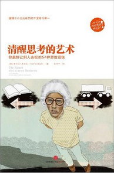

[53/100][8/15][58/135][心得](2/30)--感悟心得(暗时间) (2015/8/4 星期二 9:07:29)
普通人从自己的错误中学习, 聪明人从别人的错误中学习.
暗时间 部分试读:
http://book.douban.com/reading/13633243/
阅读--读书 清单 (2015/8/4 星期二 8:56:13)
1. 暗时间.
http://book.douban.com/subject/6709809/
总结: 专注, 自律.
[52/100][8/15][57/135][心得](1/30)--感悟心得(选择恐惧症?) (2015/8/4 星期二 8:52:48)
知乎讨论:
http://www.zhihu.com/question/20696837
《暗时间》
暗时间 (豆瓣)
中有这样一段话：“有人会因为无法作出决定就推迟决定，然而实际上推迟决定恰恰是最差的决定，在推迟决定期间，时间悄悄流逝，你却没有任何一条路上的积累，白白浪费了时间。如果你有一些钱不知道花在A还是B上，你先不作决定，没问题，因为钱还是你的，但如果你有一些时间，不知道花在A上还是B上，不行，因为过了这段时间，这段时间就不是你的了。”
很多决定确实会影响你的一生，但这样机会人的一生中平均也就七八次，如果你时时都有这个念头，是不是有些多了呢？很多时候都只是瞎担心罢了，但最坏的打算恰恰是犹豫不决，因为往往你几个不同的决定是意味着将来不同的道路，但是其实每条路都是光明的。 比如说林书豪，就算他不决定进NBA，他可能完成哈佛经济学的学业，成为一名成功的经济学家；如果贝索斯不创立亚马逊，继续做他的对冲基金，也许很多年后他也会能成为第二个索罗斯。
在《从优秀到卓越中》有个飞轮开门的例子，就是无论你是顺时针转动飞轮还是逆时针转动都能将门打开，但一定要坚持，如果你时而顺时针，时而逆时针，那就无论如何都打不开。所以，贵在坚持，如果你认准了一个选择，就毫不犹豫地坚持下去。
每个人对选择多少都会有些恐惧，因为选择意味着放弃其中的若干选项，而失去的感觉（即使那是个垃圾）总是让人讨厌的。
这在营销中叫作购后失调，就是你买了A商品后，会认为B商品更好；反之买了B商品亦然。负性偏差是每个人都难以避免的，也是人类长期进化出来的心理，人对失去的担心远远大过得到的快乐，因为一次没有发现天敌就会让你丧命，而错过食物顶多饿两个小时肚子。 （具体可见2002年诺贝尔经济学奖得主卡尼曼的“前景理论”
前景理论_百度百科
）
最后，如果一直处于犹豫状态，就会变成布里丹之驴，徘徊在两边的草之间，因为想要两者兼得，最后难逃两者都得不到而饿死的悲惨命运。
布里丹毛驴效应
如果已经到了“恐惧症‘的地步，建议最好还是去看心理医生。
不过就像刚才说的，当你已意识到选择迟疑的危害时，你实际上已经对自己部分使用了认知疗法，这最少是个好的开始，虽然这与专业治疗的认知疗法相比微乎其微。
进步书单 (2014/7/22 星期二 20:29:28)
1--《清醒思考的艺术》

2--
《黑客与画家：硅谷创业之父paul graham文集》
3--
你的生存本能正在杀死你